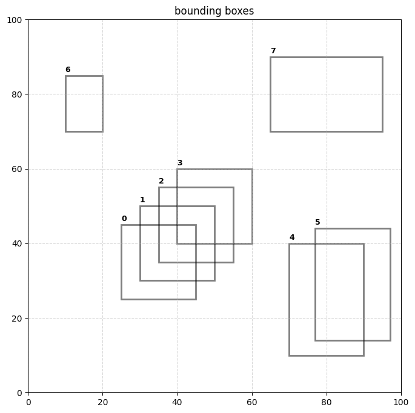
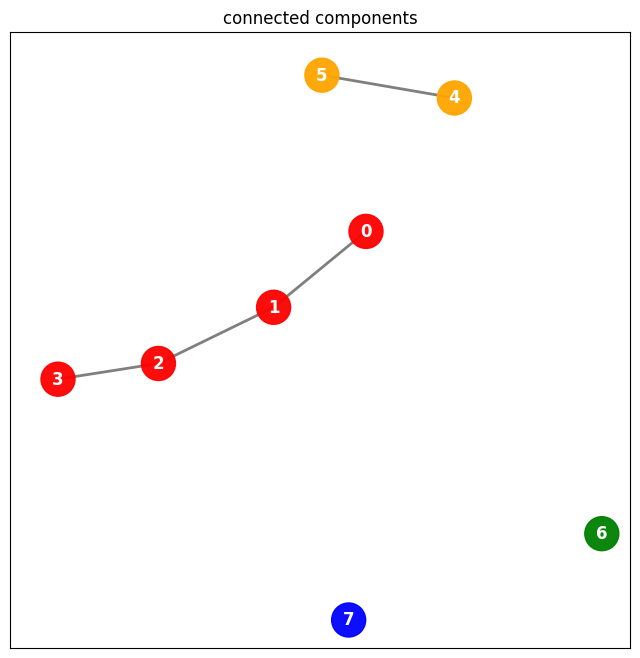
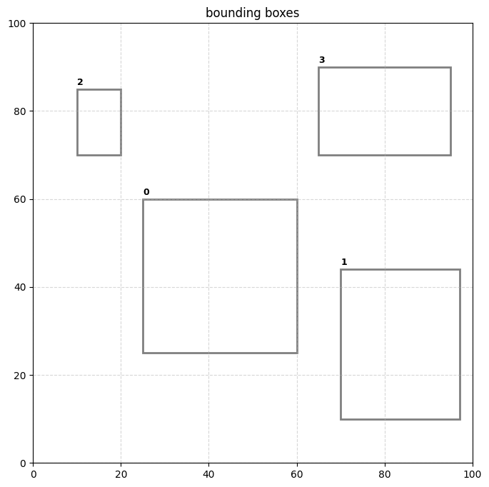

import matplotlib.pyplot as plt
import matplotlib.patches as patches
boxes = [
(25, 25, 45, 45),
(30, 30, 50, 50),
(35, 35, 55, 55),
(40, 40, 60, 60),
(70, 10, 90, 40),
(77, 14, 97, 44),
(10, 70, 20, 85),
(65, 70, 95, 90)
]… I recently came across a small issue at work where I began to use a transformer based model for object detection that did not have non-maximal suppression baked into the inference pipeline. running inference on a model that was not fine-tuned gave back a boatload of overlapping bounding boxes. the problem got me thinking about connected components and the union-find algorithm and I realized that I could frame collapsing boxes within the confines of graph theory…
def plot_boxes(bboxes):
fig, ax = plt.subplots(figsize=(8, 8))
ax.set_xlim(0, 100)
ax.set_ylim(0, 100)
ax.set_aspect('equal')
for i, box in enumerate(bboxes):
x1, y1, x2, y2 = box
width, height = x2 - x1, y2 - y1
rect = patches.Rectangle(
(x1, y1),
width,
height,
linewidth=2,
edgecolor='black',
facecolor='none',
alpha=0.5
)
ax.add_patch(rect)
ax.text(x1,
y2 + 1,
f'{i}',
fontsize=9,
fontweight='bold'
)
plt.title('bounding boxes')
plt.grid(True, linestyle='--', alpha=0.5)
plt.show()plot_boxes(boxes)
… analagous graph …
import networkx as nx
G = nx.Graph()
G.add_nodes_from(range(8))
G.add_edges_from([(0, 1), (1, 2), (2, 3)])
G.add_edges_from([(4, 5)])
components = list(nx.connected_components(G))
color_palette = ["red", "orange", "green", "blue"]
node_colors = [None] * 8
for i, component in enumerate(components):
for node in component:
node_colors[node] = color_palette[i % len(color_palette)]
plt.figure(figsize=(8, 8))
pos = nx.spring_layout(G, k=1, iterations=60, seed=42) # 'k' ~ node distance
nx.draw_networkx_nodes(G, pos, node_color=node_colors, node_size=600, alpha=0.95)
nx.draw_networkx_edges(G, pos, width=2, alpha=0.5, edge_color="black")
nx.draw_networkx_labels(G, pos, font_size=12, font_color="white", font_weight="bold")
plt.title("connected components")
plt.show()
def get_iou(box_a, box_b):
# intersect box
x_a = max(box_a[0], box_b[0])
y_a = max(box_a[1], box_b[1])
x_b = min(box_a[2], box_b[2])
y_b = min(box_a[3], box_b[3])
# areas
intersect_area = max(0, x_b - x_a) * max(0, y_b - y_a)
box_a_area = (box_a[2] - box_a[0]) * (box_a[3] - box_a[1])
box_b_area = (box_b[2] - box_b[0]) * (box_b[3] - box_b[1])
return intersect_area / float(box_a_area + box_b_area - intersect_area)from itertools import combinations
# IOU threshold for merging two boxes
threshold = 0.25
# adjacency list graph representation
graph = {v: set() for v in range(len(boxes))}
# create edges. edge is if any combination overlaps
for u, v in combinations(range(len(boxes)), 2):
if get_iou(boxes[u], boxes[v]) > threshold:
# add to adjacency list
graph[u].add(v)
graph[v].add(u)
# print(f"Adjacency List Graph: {graph}")
# parents for union-find
parents = [i for i in range(len(boxes))]
# find goes until a root is found
def find(v):
while v != parents[v]:
v = parents[v]
return v
# union assigns one vertex's parent as the other's parent
def union(u, v):
root_u = find(u)
root_v = find(v)
if root_u != root_v:
parents[root_v] = root_u
# for every edge in graph perform union to connect components
# NOTE ideally this should be done in edge creation step but more explicit here
seen = set()
for u in graph:
for v in graph[u]:
if (u, v) not in seen and (v, u) not in seen:
union(u, v)
seen.add((u, v))
# for each connected component keep track of merged box as
# [min x1, min y1, max x2, max y2]
components = {}
for i in range(len(boxes)):
root = find(i)
box = boxes[i]
if root not in components:
# init as a list to allow mutation
components[root] = list(box)
else:
components[root][0] = min(components[root][0], box[0]) # x1
components[root][1] = min(components[root][1], box[1]) # y1
components[root][2] = max(components[root][2], box[2]) # x2
components[root][3] = max(components[root][3], box[3]) # y2
collapsed_boxes = [tuple(b) for b in components.values()]
print(f"reduced {len(boxes)} boxes to {len(collapsed_boxes)}.")
plot_boxes(collapsed_boxes)reduced 8 boxes to 4.
… can optimize with path compression - find procedure links for faster lookups, call to union during graph creation step …